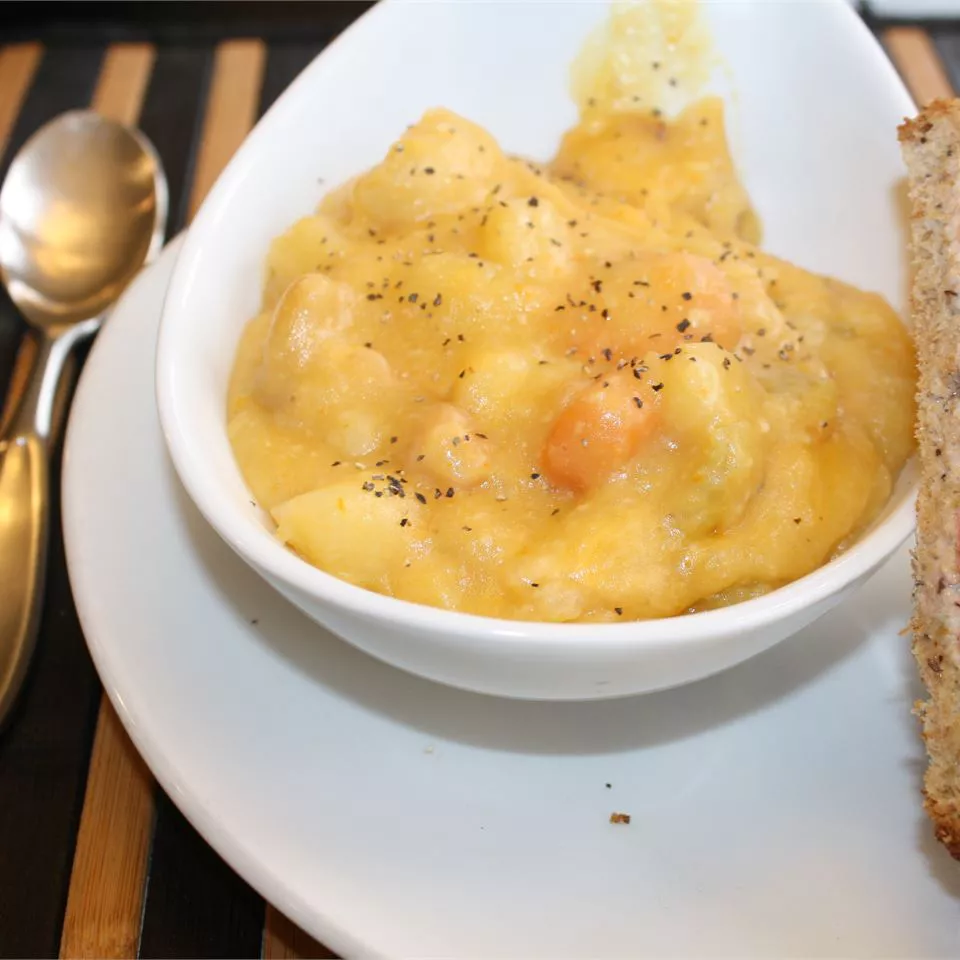

Creamy Slow Cooker Potato Cheese Soup

Description
Soup for a crowd made in my 6 1/2 quart slow cooker. Hearty and flavorful. Serve with corn bread or your favorite crusty bread and a salad or other vegetable. For a 3 quart slow cooker, halve all ingredient amounts.
Ingredients
- 1/4 cup butter
- 1/2 white onion, chopped
- 1/4 cup all-purpose flour
- 2 cups water
- 2 large carrots, diced
- 4 stalks celery, diced
- 1 tablespoon dried, minced garlic
- salt and pepper to taste
- 1 cup milk
- 2 tablespoons chicken soup base
- 1 cup warm water
- 5 pounds russet potatoes, peeled and cubed
- 1 bay leaf
- 1 cup shredded Cheddar cheese
- 6 slices crisp cooked bacon, crumbled
Steps
-
Melt butter in a large saucepan over medium heat. Cook onion in butter until translucent. Stir in flour until smooth, then gradually stir in 2 cups water, carrots, celery, garlic, salt, and pepper. Heat through, then stir in milk. Dissolve chicken base in 1 cup warm water, and pour into vegetable mixture.
-
Place potatoes in slow cooker, and pour heated vegetable mixture into potatoes. Place bay leaf in pot.
-
Cover, and cook 5 hours on High, or 8 hours on Low.
-
Remove bay leaf. Puree about 4 cups of the soup in a blender or food processor, and then stir pureed soup into contents of slow cooker. Stir in cheese and bacon until cheese is melted.